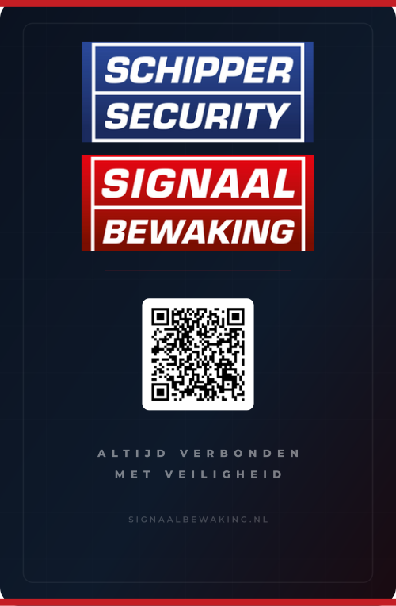
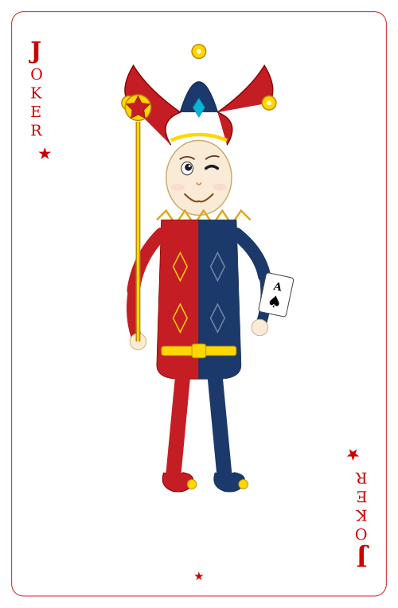
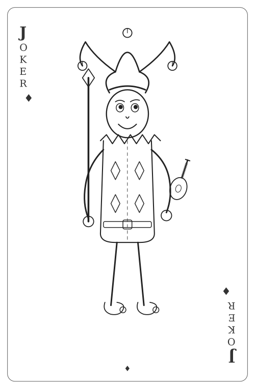
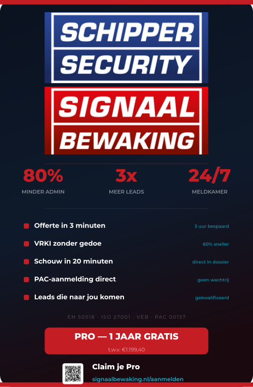

1. Product Overview
| Item | Specification |
|---|
| Product | Custom promotional playing card deck (poker size) |
| Card size | 57mm x 87mm (standard poker) |
| Cards per deck | 52 standard + 2 joker cards + 1 marketing card = 55 cards |
| Card material | 350gsm blue core card stock (casino grade) |
| Card finish | Matte laminate, smooth feel |
| Quantity | 2,500 decks |
| Box | Custom printed tuck box, 350gsm |
| Deadline | Delivery before April 1, 2026 |
2. Design Preview
Below are PNG renders of all custom card designs. Vector SVG source files are provided in the file package.

Card Back
All 55 cards

Joker 1 — Colored
Traditional jester, branded

Joker 2 — Line Art
B&W pen drawing

Marketing Card
Benefits + CTA
3. Color Specification
Important: Colors must be Pantone accurate. Please provide a physical proof before production.
| Color Name | HEX | CMYK | Pantone | Usage |
|---|
| Signaal Red |
#C41E24 | C5 M100 Y95 K2 | 200 C |
Card back accents, joker 1 costume, box sides, Pro badge |
| Schipper Blue |
#1B3A6B | C90 M65 Y20 K20 | 289 C |
Schipper Security logo, joker 1 costume right half |
| Dark Navy |
#0b1220 | C95 M80 Y40 K75 | 5395 C |
Card back background, box panels, marketing card bg |
| White |
#FFFFFF | C0 M0 Y0 K0 | — |
Joker card backgrounds, QR box, text |
| Gold |
#FFD700 | C0 M10 Y95 K0 | 116 C |
Jester bells, belt, scepter, collar details |
4. Card Back Design
All 55 cards have the same back design: dark navy background with branded logos and QR code.
| Element | Specification |
|---|
| Background | Dark navy gradient (#0b1220 → #1a0a10) with subtle grid pattern |
| Top/bottom accent | Signaal Red (#C41E24) bar, 3px, full width |
| Inner frame | White border (6% opacity), 10mm from edges |
| Top logo | Schipper Security — embedded PNG (blue box, white italic text) |
| Second logo | Signaal Bewaking — embedded PNG (red/white split box) |
| Center element | QR code on white background — links to signaalbewaking.nl/aanmelden |
| Tagline | "ALTIJD VERBONDEN / MET VEILIGHEID" (white, 45% opacity) |
| Bottom URL | "SIGNAALBEWAKING.NL" (white, 22% opacity) |
File: card-back/card-back.svg
5. Joker Cards (x2)
Two custom joker cards with white backgrounds, traditional playing card jester style. Both have the standard card back on the reverse.
Joker 1 — Colored Jester
| Element | Specification |
|---|
| Background | White (#FFFFFF) |
| Border | Red (#CC0000) inner frame, 0.3pt |
| Corner text | "JOKER" vertical (top-left + bottom-right rotated 180deg) |
| Corner symbol | Red star (★) |
| Figure | Traditional jester — full body, fills card height (y=22 to y=216) |
| Hat | 3-pointed with bells: left+right red (#C41E24), center blue (#1B3A6B), gold bells + jewel |
| Costume | Split: left half Signaal Red, right half Schipper Blue, gold diamond patterns + belt |
| Left hand | Scepter with gold star-in-circle top |
| Right hand | Playing card (Ace of Spades) |
| Shoes | Curled jester shoes with gold bells, matching costume colors |
File: joker-card/joker-1-color.svg
Joker 2 — Line Art Jester
| Element | Specification |
|---|
| Background | White (#FFFFFF) |
| Border | Dark gray (#444) inner frame, 0.3pt |
| Corner text | "JOKER" vertical (top-left + bottom-right rotated), gray (#333) |
| Corner symbol | Diamond (♦) |
| Figure | Identical pose to Joker 1, but rendered as pen & ink line drawing |
| Style | All outlines in #222, stroke-width 0.5-1.2pt, no fills |
| Hat | Same 3-pointed shape, outlined bells |
| Costume | Outlined body with dashed center line, diamond patterns |
| Left hand | Staff with diamond top |
| Right hand | Mandolin/lute (outlined) |
File: joker-card/joker-2-lineart.svg
6. Marketing Card (x1)
One additional card per deck with product benefits and call-to-action.
| Element | Specification |
|---|
| Background | Dark navy gradient (#0b1220) |
| Top/bottom accent | Red bar (#C41E24), 3px |
| Top logos | Schipper Security + Signaal Bewaking (embedded PNG, stacked) |
| Stats row | "80% MINDER ADMIN" / "3x MEER LEADS" / "24/7 MELDKAMER" in red |
| Features | 5 items with red bullets + cyan detail text |
| Credentials | EN 50518 · ISO 27001 · VEB · PAC 00157 |
| Pro badge | "PRO — 1 JAAR GRATIS / t.w.v. €1.199,40" red pill |
| Bottom CTA | QR code + "Claim je Pro" + signaalbewaking.nl/aanmelden |
File: marketing-card/marketing-card-front.svg
7. Tuck Box Design
| Panel | Design |
|---|
| Front (63x90mm) | Dark navy bg — Schipper Security + Signaal Bewaking logos, "DE SLIMME ZET / VOOR INSTALLATEURS", small QR code |
| Back (63x90mm) | Dark navy bg — "DE INNOVATIEVE ALARMCENTRALE.", stats (80%/24/7/3x), Pro badge, large QR, credentials |
| Left side (18x90mm) | Signaal Red — "SCHIPPERSECURITY.NL" vertical |
| Right side (18x90mm) | Signaal Red — "SIGNAALBEWAKING.NL" vertical |
| Top flap | Dark navy — "SIGNAALBEWAKING.NL" |
| Bottom flap | Dark navy, red bottom accent |
| Spec | Value |
|---|
| Box size | 63mm x 90mm x 18mm (W x H x D) |
| Material | 350gsm coated cardboard |
| Finish | Matte laminate |
File: box-design/box-dieline.svg — Full dieline with fold marks (blue dashed lines).
8. QR Code Specification
| Location | URL | Size |
|---|
| Card back (center) | https://signaalbewaking.nl/aanmelden | ~16mm x 16mm |
| Marketing card | https://signaalbewaking.nl/aanmelden | ~5mm x 5mm |
| Box front | https://signaalbewaking.nl/aanmelden | ~5mm x 5mm |
| Box back | https://signaalbewaking.nl/aanmelden | ~10mm x 10mm |
QR code: Black modules on white background. Error correction level: H (high). Must be scannable at printed size.
9. Logo Assets
Two brand logos are embedded as PNG images in the SVG designs. Original logo files are also provided:
| Logo | File | Style | Appears on |
|---|
| Schipper Security | 1_x-schipper-security-logo-trans-*.png | Blue rectangle, white italic bold text, white border | Card back, box front, marketing card |
| Signaal Bewaking | logo-signaalbewaking EPS.png | Red rectangle, white "SIGNAAL" top, dark red "BEWAKING" bottom | Card back, box front, marketing card |
Important: Logos are embedded as base64 PNG in the SVGs. For highest print quality, replace with vector EPS/AI versions if available.
10. Typography
| Usage | Font | Weight |
|---|
| Headlines / badges | Montserrat | 800 (ExtraBold) |
| Body / subtext | Montserrat | 600 / 400 |
| Joker corner text | Georgia / Times New Roman | 700 (Bold) |
Important: All text must be converted to outlines/curves in final production files.
11. Quality Requirements
- Cards must have casino-grade feel — smooth, flexible, durable
- Colors must match Pantone 200 C (red) and Pantone 289 C (blue)
- Card back must be perfectly aligned front-to-back — no visible offset
- Rounded corners: 3mm radius
- Bleed: 3mm on all sides
- Box must fit cards snugly — not too tight, not too loose
- Physical sample/proof required before full production run
12. File Structure
10_playing_cards/
+-- box-design/
| +-- box-dieline.svg <- Tuck box dieline with fold marks
+-- card-back/
| +-- card-back.svg <- Card back (all 55 cards)
+-- joker-card/
| +-- joker-1-color.svg <- Joker 1: colored jester (white bg)
| +-- joker-2-lineart.svg <- Joker 2: line-art jester (white bg)
+-- marketing-card/
| +-- marketing-card-front.svg <- Marketing/benefits card
+-- previews/ <- PNG preview renders
+-- production-files/ <- Final PDF exports for print
+-- supplier-page/
+-- index.html <- This specification document
13. Delivery Details
| Field | Details |
|---|
| Company | Schipper Security B.V. |
| Contact | Michiel van der Wal |
| Email | verkoop@signaalbewaking.nl |
| Address | Vendelier 71, 3905 PD Veenendaal, Netherlands |
| Quantity | 2,500 decks |
| Deadline | Arrive before April 1, 2026 |
© 2026 Schipper Security B.V. — SignaalBewaking
Document version: 5.0 — March 2026